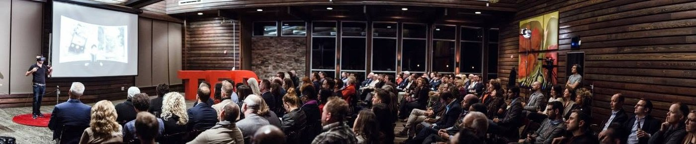
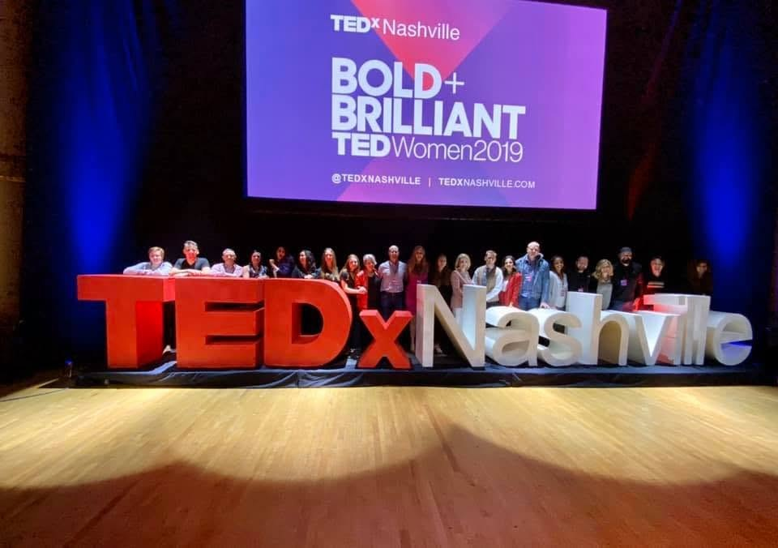
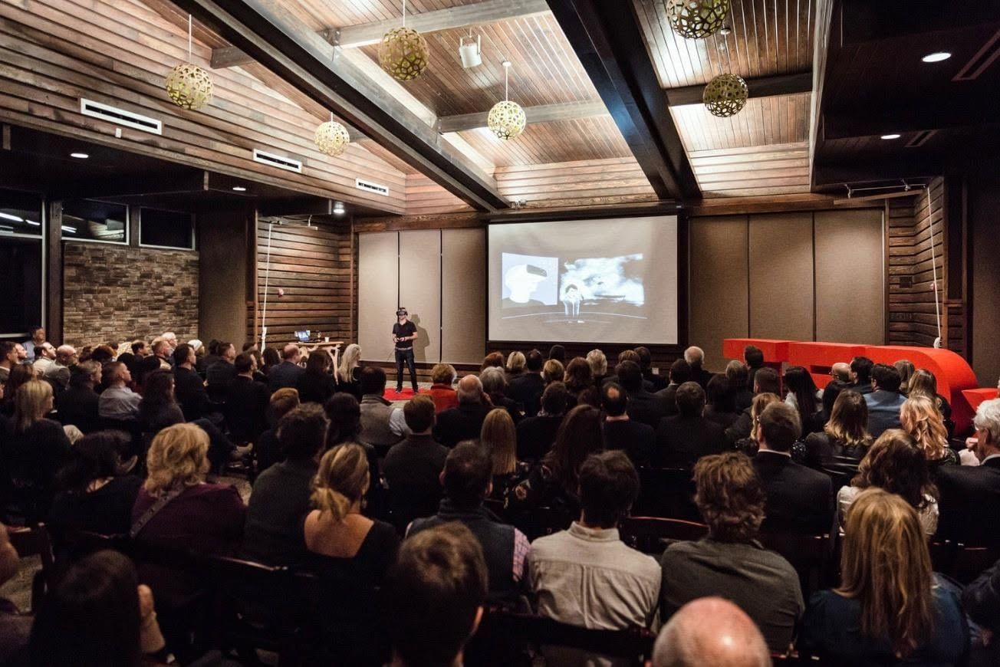
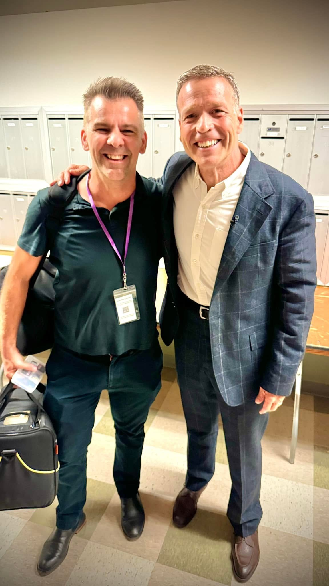

TEDxNashville video production
I've served on the TEDxNashville board and produced and edited the multicam video for other people's talks. Thirty-four speakers are below, and every one with a published video is embedded right here.



The talks
Produced and edited for TEDxNashville and TEDxNashvilleWomen. Three of them got picked up and republished by TED.com itself, which is not something you can plan for and is very satisfying when it happens.
Editing other people's talks for a few years teaches you something you cannot get from giving one. You watch, in the timeline, the exact second an audience decides whether to stay with a speaker. It is almost always earlier than anybody thinks, and it is almost never the part the speaker rehearsed hardest.
-
Why women belong in conversations about money · TEDxNashvilleWomen
-
How disgust drives your politics · picked up by TED.com
-
How quantum marketing will change our lives — for good
-
Spoken word performance · Southern Word
-
Alcohol-free is the life-upgrade you're not considering
-
How to Google your symptoms without freaking out · picked up by TED.com
-
Why childhood eczema rates are a universal alarm · TEDxNashvilleWomen
-
Why depression isn't what you think · picked up by TED.com
-
Why community joy is a dirty job you need to try
-
Why menopause is a powerful new beginning · TEDxNashvilleWomen
-
Video not yet postedJordan Grace
-
Video not yet postedLarissa May

Wondering which half of your own work is at risk?
Ten questions about how you actually get paid, and my honest read on what's exposed and what isn't. No score, because a score would be a number I made up.